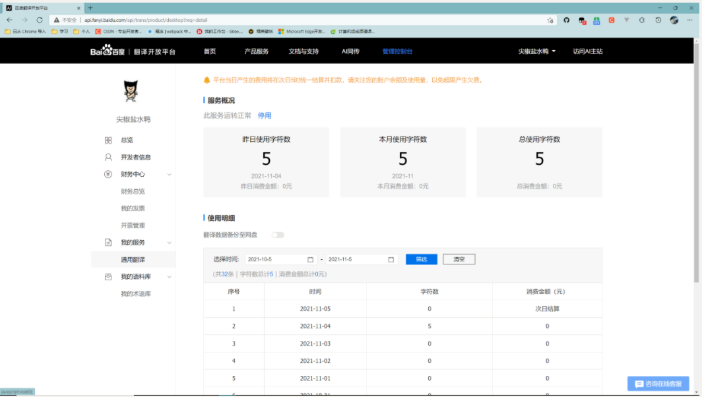

一.前往百度翻译开放平台
1.网址：百度翻译开放平台 注册之后，记得在我的服务中开启通用翻译
注册之后，记得在我的服务中开启通用翻译
2.记住自己的 APP ID 和 密钥（后面会使用到）

二.新建一个vue项目
1.首先需要安装 vue-cli
npm install -g @vue/cli
2.使用vue-cli 创建一个 vue 项目
vue create 项目名 //选择 vue3 快速开发 Vue CLI v4.5.14 ┌───────────────────────────────────────────┐ │ │ │ New version available 4.5.14 → 4.5.15 │ │ Run npm i -g @vue/cli to update! │ │ │ └───────────────────────────────────────────┘ ? Please pick a preset: doingshow ([Vue 3] babel, router, vuex, eslint) Default ([Vue 2] babel, eslint) > Default (Vue 3) ([Vue 3] babel, eslint) Manually select features
3.可以 vue ui 命令以图形化界面创建和管理项目：
vue ui
4.启动项目
npm run serve三.前期准备
1.安装必要的插件
//1.安装 axios 插件 npm i -s axios //2.安装 element-plus 插件 npm i -s element-plus@1.1.0-beta.8 //3.安装 qs 插件 npm i -s qs
2.在 mian.js文件下 引入 element-plus
地址：element-plus
// main.ts import { createApp } from 'vue' import ElementPlus from 'element-plus' import 'element-plus/dist/index.css' import App from './App.vue' const app = createApp(App) app.use(ElementPlus) app.mount('#app')
3.调用 md5算法对 签名 进行 加密
//npm 安装： npm install --save js-md5
在需要使用的项目文件中引入：
import md5 from 'js-md5'; //使用： md5('holle') // bcecb35d0a12baad472fbe0392bcc043
四.代码部分编写
1.App.vue下 script 的代码编写
（1）.编写 send方法代码
<script setup> // setup 这个很重要import {ref} from 'vue'import { ElMessage } from "element-plus"; //弹窗组件import md5 from 'js-md5'import axios from 'axios'import Qs from 'qs'const q =ref('') //查询文本function send(){ const data={ //百度接口需要传的参数 q:q.value, appid:'20211103000990583', salt:'1435660288', from:'zh', to:'en', sign: md5(`20211103000990583${q.value}1435660288l6B_1MQG1iLOOvLyUBis`) //appid=2015063000000001+q=apple+salt=1435660288+密钥=12345678 } axios({ Headers:{ 'Content-Type':'application/x-www-form-urlencoded' }, method:'post', url:'/api', data:Qs.stringify(data)}).then(res=>{ if(res.status ==200){ }else{ ElMessage.error("信息错误，请检查网络") } })console.log(md5("hello"))};</script>
（2）.当 按下 回车键 后 调用 send方法
<el-card><el-input v-model="q" @keydown.enter="send"></el-input></el-card>
2.在 vue.config.js 下编写
需要自己新建该文件
module.exports = { devServer: { proxy: { '/api': { target: 'https://fanyi-api.baidu.com/api/trans/vip/translate', changeOrigin: true, rewrite: (path) => path.replace(/^\/api/, '') } } }}
五.做前需知
1. 可在 百度翻译开放平台 查询使用方法
2.通用翻译API HTTPS 地址：
https://fanyi-api.baidu.com/api/trans/vip/translate